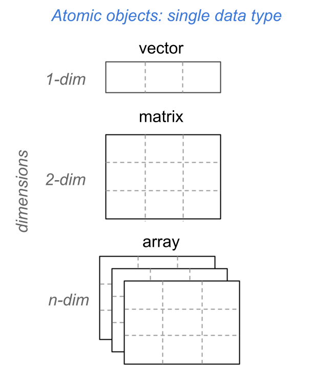

# inputs
deposit = 1000
rate = 0.02
years = 0:5
# future values
amounts = deposit * (1 + rate)^years
amounts[1] 1000.000 1020.000 1040.400 1061.208 1082.432
[6] 1104.081In the previous four chapters, we discussed a number of ideas and concepts that basically have to do with vectors and their cousins factors. You can think of vectors and factors as one-dimensional objects. While many data sets can be handled through vectors and factors, there are occasions in which one dimension is not enough. The classic example for when one-dimensional objects are not enough involves working with data that fits better into a tabular structure consisting of a series of rows (one dimension) and columns (another dimension).
In this chapter we introduce R arrays, which are multidimensional atomic objects including 2-dimensional arrays better known as matrices, and N-dimensional generic arrays.
Let us continue discussing the savings-investing scenario in which you deposit $1000 into a savings account that pays you an annual interest rate of 2%.
Assuming that you leave that money in the bank for several years, with a constant rate of return \(r\), you can use the Future Value (FV) formula to calculate how much money you’ll have at the end of year \(n\):
\[ \text{FV} = \text{PV} (1 + r)^n \]
where:
Here’s some R code to obtain a vector amounts containing the amount of money that you would have from the beginning of time, and at the end of every year during a 5 year period:
# inputs
deposit = 1000
rate = 0.02
years = 0:5
# future values
amounts = deposit * (1 + rate)^years
amounts[1] 1000.000 1020.000 1040.400 1061.208 1082.432
[6] 1104.081Recall that this code is an example of vectorized (and recycling) code because the FV formula is applied to all the elements of the involved vectors, some of which have different lengths.
So far, so good.
Now, consider a seemingly simple modification. What if you want to organize the amount values in a table? Something like this:
| year | amount |
|---|---|
| 0 | 1000.000 |
| 1 | 1020.000 |
| 2 | 1040.400 |
| 3 | 1061.208 |
| 4 | 1082.432 |
| 5 | 1104.081 |
In other words, what if you are interested not in getting the set of future values in a vector, but instead you want them to be arranged in some sort of tabular object? How can you create a table in which the first column year corresponds to the years, and the second column amount corresponds to the future amounts? Let’s find out.
R provides two main ways to organize data in a tabular (i.e. rectangular) object. One of them is a matrix—the topic of this chapter—and the other one is a data.frame—to be discussed in a subsequent chapter.
You can build a matrix by column binding vectors using the function cbind(). In the code below we pass years and amount to the cbind() function, which returns a matrix having the tabular structure that we are looking for: years in the first column, and amounts in the second column.
# inputs
deposit = 1000
rate = 0.02
years = 0:5
# future values
amounts = deposit * (1 + rate)^years
# output as a matrix via cbind()
savings = cbind(years, amounts)
savings years amounts
[1,] 0 1000.000
[2,] 1 1020.000
[3,] 2 1040.400
[4,] 3 1061.208
[5,] 4 1082.432
[6,] 5 1104.081As you can tell, the use of cbind() is straightforward. All you have to do is pass the vectors, separating them with a comma. Each vector will become a column of the returned matrix.
You can also build a matrix by row binding vectors. For instance, pretend for a minute that we are interested in obtaining a tabular object in which the first row corresponds to years, and the second row to amounts. To obtain this object we use rbind() as follows:
savings = rbind(years, amounts)
savings [,1] [,2] [,3] [,4] [,5]
years 0 1 2.0 3.000 4.000
amounts 1000 1020 1040.4 1061.208 1082.432
[,6]
years 5.000
amounts 1104.081The difference between cbind() and rbind() is that the latter will “stack” the given vectors on top of each other. That is, each vector will become a row of the returned matrix.
In turns out that an R matrix is a special type of multi-dimensional atomic object called array. Both classes of objects, together with vectors and factors, form the triad of atomic objects. This is illustrated in the following diagram in terms of their number of dimensions.

Personally, I prefer to reserve the term array for three or more dimensional arrays. As you can tell from the above diagram, this is how I’m using this term in the book. However, you should always keep in mind that a matrix is an array. The other way around is not necessarily true: not all arrays are matrices.
matrix()The cbind() and rbind() functions provide a convenient way to create matrices from different input vectors. But the kind of matrices that you can create with them is limited if all you have is just one input vector.
So, in addition to cbind() and rbind(), R comes with the function matrix() which is the workhorse function for creating matrices. Usually, you provide an input vector, and also the number of rows and columns (i.e. the matrix dimensions) that the returned matrix should have.
Here is how to use matrix() to create the savings matrix that we are interested in obtaining:
savings = matrix(c(years, amounts), nrow = 6, ncol = 2)
savings [,1] [,2]
[1,] 0 1000.000
[2,] 1 1020.000
[3,] 2 1040.400
[4,] 3 1061.208
[5,] 4 1082.432
[6,] 5 1104.081This is an interesting piece of code. Notice that years and amounts are combined into a single vector, which is the main input of matrix(). The two other arguments correspond to the matrix dimensions: nrow = 6 tells R that we want to produce a matrix with 6 rows; ncol = 2 indicates that we want the matrix to have 2 columns.
When creating a matrix via the function matrix(), R takes into consideration three important aspects:
the length of the input vector.
the “size” of the matrix given by its number of rows and columns; think of this as the total number of cells or entries in the matrix.
whether the length of the input vector is a multiple or sub-multiple of the size of the matrix.
In the current example, the input vector c(years, amounts) has 12 elements. In turn, the size of the desired matrix is given by the multiplication of the number of rows (2) times the number of columns (6), that is:
\[ \text{size of matrix} = 6 \times 2 = 12 \text{ cells} \]
R then compares the length of the input vector against the size of the matrix. If these numbers are the same, like in this example, R proceeds to split the elements of the input vector into 2 sections or sub-vectors, each one containing 6 elements. Each of these sections will become a column of the output matrix.
In other words, the vector c(years, amounts) is split into 2 sub-vectors:
# the first sub-vector is:
0 1 2 3 4 5
# the second sub-vector is:
1000.000 1020.000 1040.400 1061.208 1082.432 1104.081The first sub-vector, which corresponds to years, becomes the first column. The second sub-vector, which corresponds to amounts, becomes the second column. In technical terms we say that R matrices are stored column-major because of the mechanism used by R to arrange the elements of an input vector in order to create a matrix.
What about those cases in which the length of the input vector does not match the size of the desired matrix? For example, consider the following commands illustrating this type of situation:
# examples in which length of input vector
# does not match size of matrix
m1 = matrix(1:3, nrow = 3, ncol = 2)
m2 = matrix(1:3, nrow = 2, ncol = 3)
m3 = matrix(1:12, nrow = 3, ncol = 2)Warning in matrix(1:12, nrow = 3, ncol = 2): data
length differs from size of matrix: [12 != 3 x 2]m4 = matrix(1:4, nrow = 3, ncol = 2)Warning in matrix(1:4, nrow = 3, ncol = 2): data
length [4] is not a sub-multiple or multiple of
the number of rows [3]m5 = matrix(1:8, nrow = 2, ncol = 3)Warning in matrix(1:8, nrow = 2, ncol = 3): data
length [8] is not a sub-multiple or multiple of
the number of columns [3]In matrices m1 and m2 the input vector 1:3 is a sub-multiple of the size of the matrix 6.
In matrix m3 the input vector 1:12 is longer than the size of the matrix: 6. However, the entire length of the vector, 12, is a multiple of the size 6.
In matrices m4 and m5, all the input vectors have lengths that are neither a multiple or sub-multiple of the size of the returned matrix.
When the length of the input vector does not match the size of the desired matrix, R applies its recycling rules. Let’s pay attention to m1:
m1 [,1] [,2]
[1,] 1 1
[2,] 2 2
[3,] 3 3Note how the values of the input vector 1:3 are recycled to form the columns of m1. The values appear in the first column, but they also appear in the second column after being recycled.
In contrast, matrix m3 does not use all the elements in the input vector 1:12. Instead, only the first six values are retained.
As for the matrices m4 and m5, they all have an input vector whose length is neither a multiple nor a sub-multiple of the size of the matrix. In these cases R will also apply its recycling rules, but it will also display a warning message letting us know that the length of the input vector is not a multiple or sub-multiple of either the number of rows or the number of columns.
Often, you may need to provide names for either the rows and/or the columns of a matrix. R comes with the functions rownames() and colnames() that can be used to assign names for the rows and columns, for example:
# matrix of savings amounts
savings = matrix(c(years, amounts), nrow = 6, ncol = 2)
# row and columns names
rownames(savings) = 1:6
colnames(savings) = c("year", "amount")
savings year amount
1 0 1000.000
2 1 1020.000
3 2 1040.400
4 3 1061.208
5 4 1082.432
6 5 1104.081Let’s make things a bit more complex. Say you have the following investments:
$1000 in a savings account that pays 2% annual return, during 4 years
$2000 in a money market account that pays 2.5% annual return, during 2 years
$5000 in a certificate of deposit that pays 3% annual return, during 3 years
In R, we can calculate the future values of each type of investment product:
# savings account
savings = 1000 * (1 + 0.02)^(0:4)
savings[1] 1000.000 1020.000 1040.400 1061.208 1082.432# money market
moneymkt = 2000 * (1 + 0.025)^(0:2)
moneymkt[1] 2000.00 2050.00 2101.25# certificate of deposit
certificate = 5000 * (1 + 0.03)^(0:3)
certificate[1] 5000.000 5150.000 5304.500 5463.635We can create individual matrices for each type of account:
# savings account
sav_mat = cbind(0:4, savings)# money market
mm_mat = cbind(0:2, moneymkt)# certificate of deposit
cd_mat = cbind(0:3, certificate)Alternatively, we can stack everything into a single matrix:
cbind(c(0:4, 0:2, 0:3), c(savings, moneymkt, certificate)) [,1] [,2]
[1,] 0 1000.000
[2,] 1 1020.000
[3,] 2 1040.400
[4,] 3 1061.208
[5,] 4 1082.432
[6,] 0 2000.000
[7,] 1 2050.000
[8,] 2 2101.250
[9,] 0 5000.000
[10,] 1 5150.000
[11,] 2 5304.500
[12,] 3 5463.635What if you want some table like this:
| account | year | amount |
|---|---|---|
| savings | 0 | 1000.000 |
| savings | 1 | 1020.000 |
| savings | 2 | 1040.400 |
| savings | 3 | 1061.208 |
| savings | 4 | 1082.432 |
| moneymkt | 0 | 2000.000 |
| moneymkt | 1 | 2050.000 |
| moneymkt | 2 | 2101.250 |
| certif | 0 | 5000.000 |
| certif | 1 | 5150.250 |
| certif | 2 | 5304.500 |
| certif | 3 | 5463.635 |
We could use the cbind() function in an attempt to obtain a matrix having a similar rectangular structure as in the above table:
investments = cbind(
rep(c("savings", "moneymkt", "certif"), times = c(5, 3, 4)),
c(0:4, 0:2, 0:3),
c(savings, moneymkt, certificate))
investments [,1] [,2] [,3]
[1,] "savings" "0" "1000"
[2,] "savings" "1" "1020"
[3,] "savings" "2" "1040.4"
[4,] "savings" "3" "1061.208"
[5,] "savings" "4" "1082.43216"
[6,] "moneymkt" "0" "2000"
[7,] "moneymkt" "1" "2050"
[8,] "moneymkt" "2" "2101.25"
[9,] "certif" "0" "5000"
[10,] "certif" "1" "5150"
[11,] "certif" "2" "5304.5"
[12,] "certif" "3" "5463.635" Do you notice something funny with the matrix investments?
As you can tell, all the values in investments are displayed being surrounded with double quotes. This indicates that all the values are of type character. Why is this?
Recall that matrices are atomic objects. Usually, you provide an input vector containing the elements to be arranged into a rectangular array with a certain number of rows and columns. Because vectors are atomic, this property is “inherited” by the returned matrix.
It turns out that you can use other classes of data objects, not necessarily atomic, for creating a matrix. If the input object is non-atomic, R will coerce it into a vector, making the input an atomic object.
So either way, whether you provide an atomic input or a non-atomic input, to any of the matrix-creation functions, R will always produce an atomic output. This is the reason why the below command produces a character matrix:
investments = cbind(
rep(c("savings", "moneymkt", "certif"), times = c(5, 3, 4)),
c(0:4, 0:2, 0:3),
c(savings, moneymkt, certificate))
typeof(investments)[1] "character"The three input vectors are coerced into a single vector of character data type, causing the investments matrix to be of type character.
1) Use matrix() to create a matrix mat1 (see below) from the input vector x = letters[1:15]:
# mat1
"a" "d" "g" "j" "m"
"b" "e" "h" "k" "n"
"c" "f" "i" "l" "o"x = letters[1:15]
mat1 = matrix(x, nrow = 3, ncol = 5)2) Look at the documentation of matrix() and find how to use it for obtaining the matrix mat2 (see below) from the input vector x = letters[1:15]:
# mat2
"a" "b" "c" "d" "e"
"f" "g" "h" "i" "j"
"k" "l" "m" "n" "o" x = letters[1:15]
mat2 = matrix(x, nrow = 3, ncol = 5, byrow = TRUE)3) Find out how to use the functions rownames() and colnames() to give names to the rows and the columns of matrix mat1. Choose any names you want, and display matrix mat1.
rownames(mat1) = c('r1', 'r2', 'r3')
colnames(mat1) = c('c1', 'c2', 'c3', 'c4', 'c5')4) Use matrix() to create a matrix mat3 (see below) from the input vector y = month.name:
# mat3
"January" "February" "March"
"April" "May" "June"
"July" "August" "September"
"October" "November" "December" y = month.name
mat3 = matrix(y, nrow = 4, ncol = 3, byrow = TRUE)5) Use matrix()—and its recycling principle—to create a matrix mat4 (see below) from the input vector a = c(3, 6, 9):
# mat4
3 3 3
6 6 6
9 9 9a = c(3, 6, 9)
mat4 = matrix(a, nrow = 3, ncol = 3)6) Use matrix()—and its recycling principle—to create a matrix mat5 (see below) from the input vector a = c(3, 6, 9):
# mat5
3 3 3
6 6 6
9 9 9
3 3 3
6 6 6
9 9 9a = c(3, 6, 9)
mat5 = matrix(a, nrow = 6, ncol = 3)7) Consider the following vectors a and b
a = c(2, 4, 6)
b = c(1, 3, 5)Use the row-binding function rbind(), with inputs a and b, to create a matrix mat6 displayed below:
# mat6 [,1] [,2] [,3]
[1,] 1 3 5
[2,] 2 4 6mat6 = rbind(b, a)8) Consider the following vectors u and v
u = c(2, 4, 6, 8)
v = c(1, 3, 5, 7)Use the column-binding function cbind(), with inputs u and v, to create a matrix mat7 displayed below:
# mat7 [,1] [,2] [,3]
[1,] 2 1 2
[2,] 4 3 4
[3,] 6 5 6
[4,] 8 7 8mat7 = cbind(u, v, u)9) Find out how to use the diag() function to create an identity matrix of dimensions 4 rows and 4 columns (see below). BTW: An identity matrix is a matrix with the same number of rows and columns, has ones in the diagonal, and zeroes off-diagonal.
1 0 0 0
0 1 0 0
0 0 1 0
0 0 0 1diag(1, nrow = 4)10) Refer to matrices mat4 and mat7. Use both cbind() and rbind() to attempt binding these two matrices. If one of the binding operations fails, explain why.
# cbind(mat4, mat7) fails because these matrices have different number of rows
# rbind(mat4, mat7) works